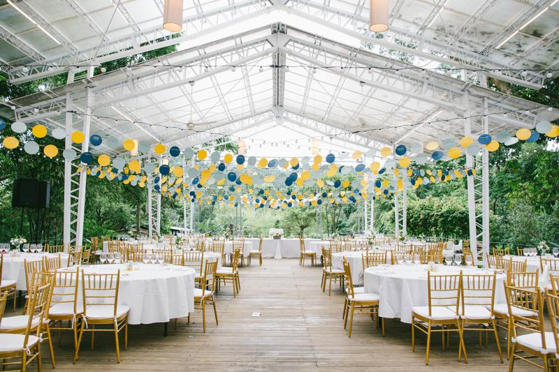
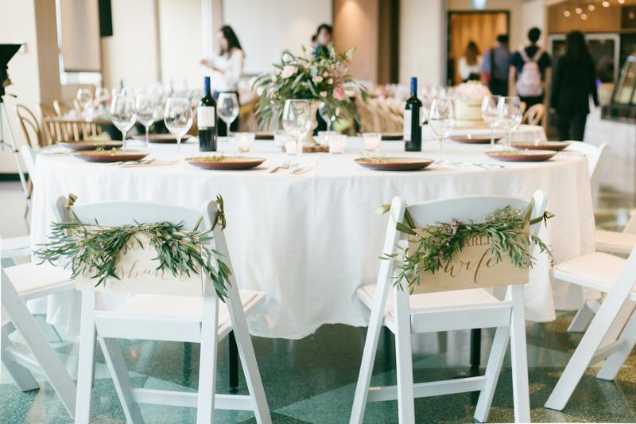
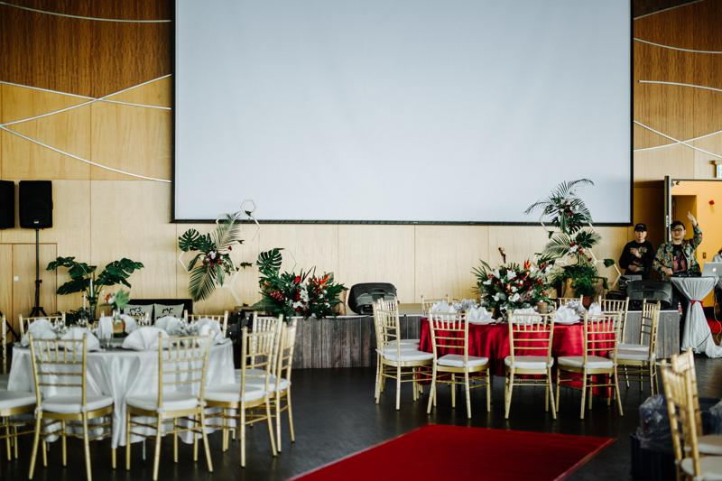
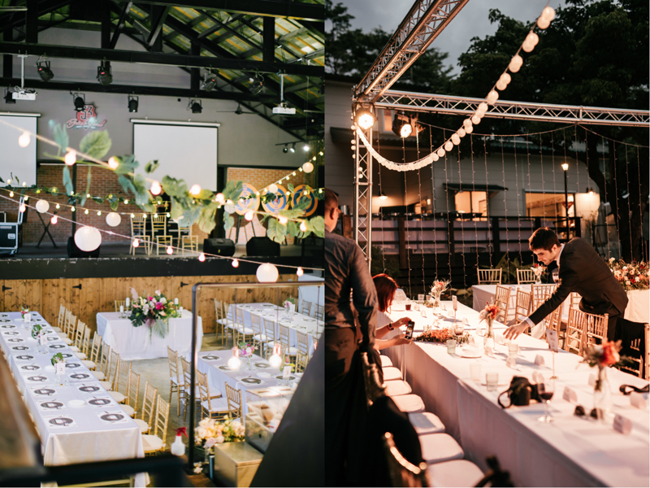
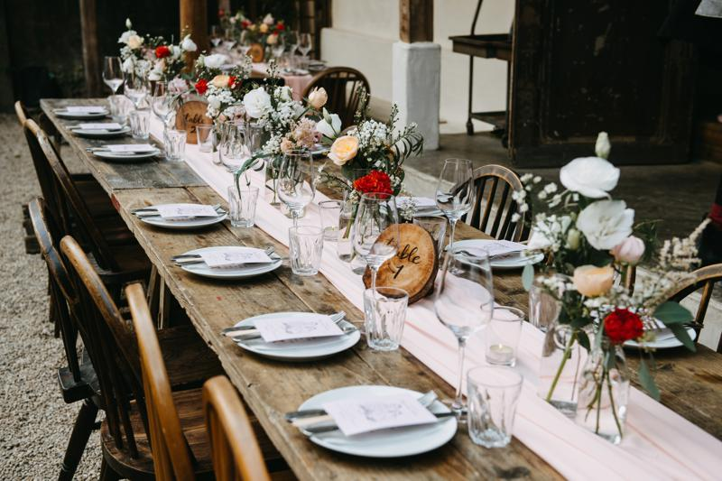
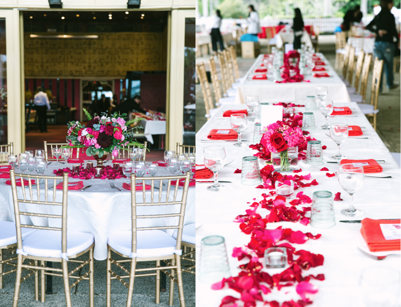

婚禮佈置-令人苦惱的婚宴桌型？專業婚顧辦婚禮
| 該選圓桌還是方桌呢？|
這是幾乎所有新人都需要考慮到的問題
猶豫不決如何選擇嗎？快來看看小編為大家整理的這篇文吧！

首先當然要來分析我們需要考慮到的部分
宴客的場地、人數、婚禮風格、用餐方式，都是影響婚宴桌型的主要因素
小編統整這些因素為新人們歸納出以下婚宴桌型的利與弊
看完後相信你們一定能抉擇出最適合自己的桌型！
| 圓桌 |

在國內最常見的婚宴桌型就是傳統圓桌啦！
圓桌有著美麗的寓意「圓滿美好」，也是多數長輩喜歡的形式

最～最重要的莫過於是場地啦！若已經挑選好心儀夢幻的婚宴場地
可以開始思考賓客大約的人數，是長輩居多還是同事朋友多
這和桌型的選擇也是有關聯的，相信我多數長輩都愛圓桌的形式～

對於人數較多、且場地格局方正的新人（狹長型較不建議）
小編會建議你們選擇圓桌，能夠容納較多的人數且對於賓客來說觀禮的視野會較好
許多新人會覺得要長桌才有西式婚禮的感覺，不用擔心～
其實並不，在國外許多新人也是選圓桌的喔！
只要透過場佈設計及花藝來改造一樣能做出很西式的氛圍
小編必須來自肥一下，拾夢最著名的就是場地改造啦，交給我們準沒錯！
| 方桌/長桌 |

最多拾夢新人喜歡的桌型當然是長桌啦！
長桌較容易將主題及風格呈現出來，是許多西式婚禮控無法放棄的元素
此桌型對場地格局較無設限，但要考慮到的是用餐方式
若是合菜，小編不建議您選擇長桌桌型，在取餐上會非常麻煩（套餐或buffet較合適）

而長桌的優點是能夠三五好友比鄰而坐，更方便交談合影
新人也可以與賓客好友們近距離接觸，輕鬆自在的聊天小聚
推薦賓客人數較少的婚宴、家宴、平輩場選擇這樣的桌型喔！

看完以上分析相信你們對於桌型都有更進一步的了解
若還是無法取捨歡迎你們預約諮詢
我們最專業的規劃師會依照新人的需求給予專業的建議呦！